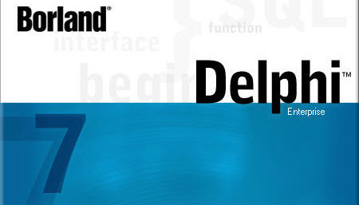

PascalABC.NET

PascalABC.NET — это язык программирования Паскаль нового поколения, включающий классический Паскаль, большинство возможностей языка Delphi, а также ряд собственных расширений.
Он реализован на платформе Microsoft.NET и содержит все современные языковые средства: классы, перегрузку операций, интерфейсы, обработку исключений, обобщенные классы и подпрограммы, сборку мусора, лямбда-
выражения, средства параллельного программирования.

PascalABC.NET является мультипарадигменным языком: на нём можно программировать в структурном, объектно-ориентированном и функциональном стилях.
PascalABC.NET — это также простая и мощная интегрированная среда разработки, поддерживающая технологию IntelliSense, содержащая средства автоформатирования, встроенный отладчик и встроенный дизайнер форм. Кроме того, консольный компилятор PascalABC.NET функционирует на Linux и MacOS под Mono.
Особенности языка
Расширения языка Паскаль
- Операторы
+= -= *= /=
- Внутриблочные описания переменных
- Описание переменных в заголовке цикла
for
- Инициализация переменной при описании
(var n: integer := 10;)
- Автоопределение типа переменной при инициализации
(var x := 1;)
- Цикл foreach
- Подпрограммы с переменным числом параметров
- Множества set на базе произвольных типов
(set of integer)
- case по строкам
- Методы в записях
- Возможность определять методы как внутри, так и вне интерфейса класса или записи
- Наряду со стандартным, упрощённый синтаксис модулей
- Операция new для вызова конструктора
- Инициализаторы полей классов и записей
- Перегрузка операций[2]
- Автоклассы
- Безымянные классы
- Лямбда-функции
- Тип функции в стиле
T->T
- Тип кортежа в стиле
(T1,T2)
- Тип последовательности
sequence of T
- Кортежное присваивание
(a,b) := (b,a)
- Срезы вида
a[from:to:step]
для массивов, списков и строк - Операторы
yield
иyield sequence
для генерации последовательностей - Поддержка директив OpenMP
Особенности языка, связанные с платформой .NET
- Все типы — классы
- Стандартный тип BigInteger
- Стандартный тип Complex
- Двумерные динамические массивы
- Интерфейсы .NET
- Подключение пространств имен .NET в разделе uses
- Обобщённые классы, интерфейсы, подпрограммы и процедурные переменные
- Автоматическая сборка мусора для объектов
- Атрибуты
- Методы расширения
- Поддержка неуправляемого кода через external
Стандартные модули
Поскольку в PascalABC.NET можно пользоваться всеми библиотеками платформы .NET, то стандартные модули немногочисленны и ориентированы на обучение:
- Устаревший модуль растровой графики GraphABC
- Модуль растровой графики GraphWPF
- Модуль векторной графики ABCObjects
- Модуль 3D графики Graph3D
- Модули исполнителей Робот и Чертёжник (школьная информатика)